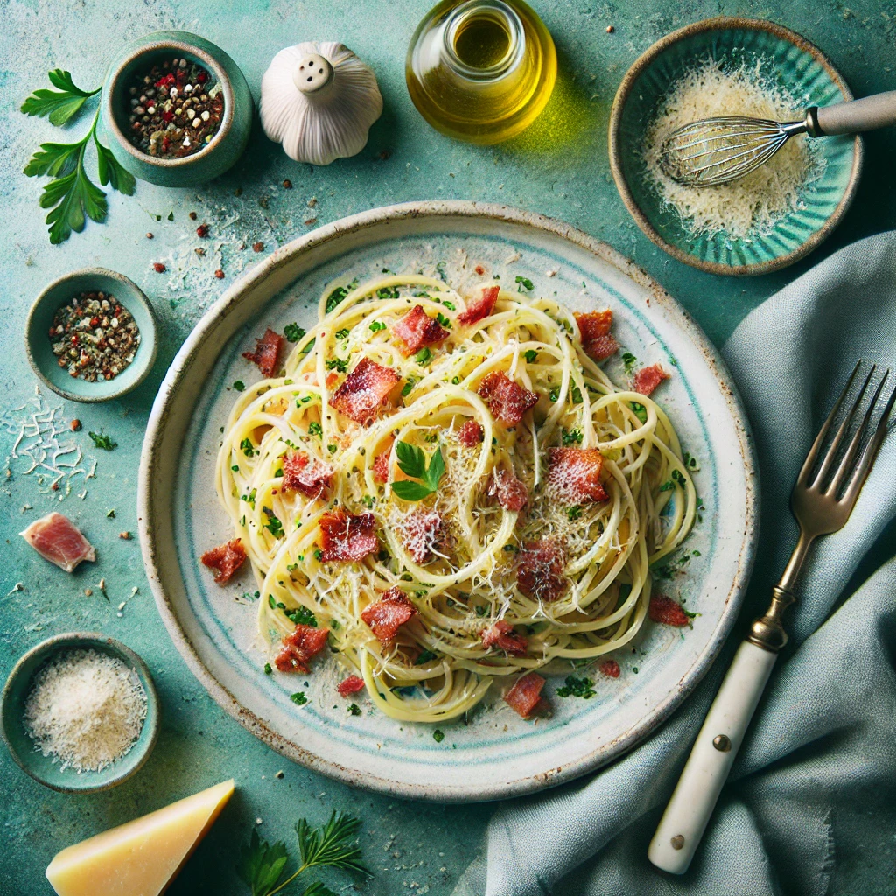

Spaghetti Carbonara Rezept
Zutaten
- 200 g Spaghetti
- 100 g Pancetta oder Guanciale, gewürfelt
- 2 Eier
- 50 g Pecorino Romano, gerieben
- 2 Knoblauchzehen, zerdrückt
- Salz und frisch gemahlener schwarzer Pfeffer
- 1 EL Olivenöl
Zubereitung
- Spaghetti kochen: In einem großen Topf gesalzenes Wasser zum Kochen bringen und Spaghetti nach Packungsanweisung al dente kochen.
- Pancetta anbraten: Währenddessen Olivenöl in einer Pfanne erhitzen und Pancetta bei mittlerer Hitze knusprig braten. Knoblauch hinzufügen und kurz mitbraten, dann entfernen.
- Eimischung: Eier in einer Schüssel verquirlen und den geriebenen Pecorino Romano unterrühren.
- Spaghetti abgießen: Die gekochten Spaghetti abgießen und sofort zur Pancetta in die Pfanne geben. Gut vermengen.
- Carbonara-Sauce: Pfanne vom Herd nehmen und die Eier-Käse-Mischung unter die heißen Spaghetti rühren. Schnell und gründlich vermengen, damit die Eier nicht stocken, sondern eine cremige Sauce bilden.
- Würzen: Mit frisch gemahlenem Pfeffer und eventuell etwas Salz abschmecken.
- Servieren: Sofort servieren und nach Belieben mit mehr Pecorino Romano bestreuen.